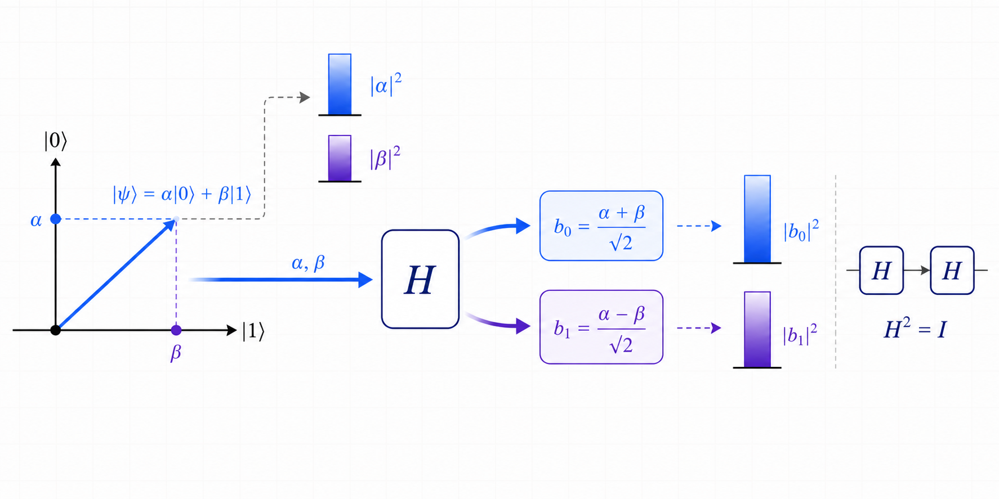

6장. 간섭은 언제 생길까?
간섭은 양자컴퓨팅에서 가장 중요한 개념 중 하나예요.
정석적으로 말하면, 간섭은 같은 기저 상태에 대한 여러 진폭 기여가 더해진 뒤에 Born 규칙이 적용될 때 생겨요.
즉 확률을 먼저 더하는 것이 아니라, 진폭을 먼저 더하고 나중에 제곱해요.
같은 기저 상태에 도착한 진폭 기여들은 먼저 더해져요.
게이트는 상태 벡터에 선형적으로 작용해요.
그래서 입력 상태가 여러 기저 상태의 합으로 되어 있으면, 게이트는 각 기저 성분을 따로 변환한 뒤 그 결과를 다시 더해요.
이 과정에서 같은 출력 기저 상태로 모인 진폭 기여가 같은 부호와 위상을 가지면 보강되고, 반대 부호나 반대 위상을 가지면 상쇄돼요.
입력: α|0⟩ + β|1⟩
게이트 뒤: α·U|0⟩ + β·U|1⟩
보강 간섭
같은 부호의 진폭 기여: 보강
+1/2 + +1/2 = +1
측정 결과값 0의 진폭이 커져요.
상쇄 간섭
반대 부호의 진폭 기여: 상쇄
+1/2 + -1/2 = 0
측정 결과값 1의 진폭이 사라져요.
H 게이트를 두 번 적용하면 간섭이 어떻게 보일까?
|0⟩ 상태에 H 게이트를 한 번 적용하면 |0⟩ 성분과 |1⟩ 성분이 모두 생겨요.
여기에 H 게이트를 한 번 더 적용하면 두 성분이 각각 다시 |0⟩과 |1⟩ 쪽으로 기여를 보내고, 같은 기저 상태로 도착한 기여들이 더해져요.
Qora로 실습해보기
H 게이트를 두 번 적용해보자
operation Main() {
// 큐비트 하나 준비
// 준비 직후 q[0]은 |0⟩ 상태
use q = Qubit[1];
// 첫 번째 H 게이트 적용
// 측정 결과값 0과 측정 결과값 1의 진폭이 모두 1/√2
H(q[0]);
// 두 번째 H 게이트 적용
// 측정 결과값 0의 진폭 기여는 보강
// 측정 결과값 1의 진폭 기여는 상쇄
H(q[0]);
// 이상적인 실행 환경: 측정 결과값 0
var result: bit = M(q[0]);
}첫 번째 H 게이트 뒤에는 두 진폭이 남아 있어요.
측정 결과값 0의 진폭 = 1/√2
측정 결과값 1의 진폭 = 1/√2
두 번째 H 게이트를 적용하면 측정 결과값 0 쪽으로 도착한 진폭 기여는 이렇게 더해져요.
+1/2 + +1/2 = +1
측정 결과값 1 쪽으로 도착한 진폭 기여도 같은 방식으로 계산해요.
+1/2 + -1/2 = 0
그래서 최종 상태는 다시 |0⟩ 상태로 돌아오게 돼요.
이 계산은 11장에서 H 게이트의 변환 규칙을 놓고 더 자세히 다시 살펴봐요.
